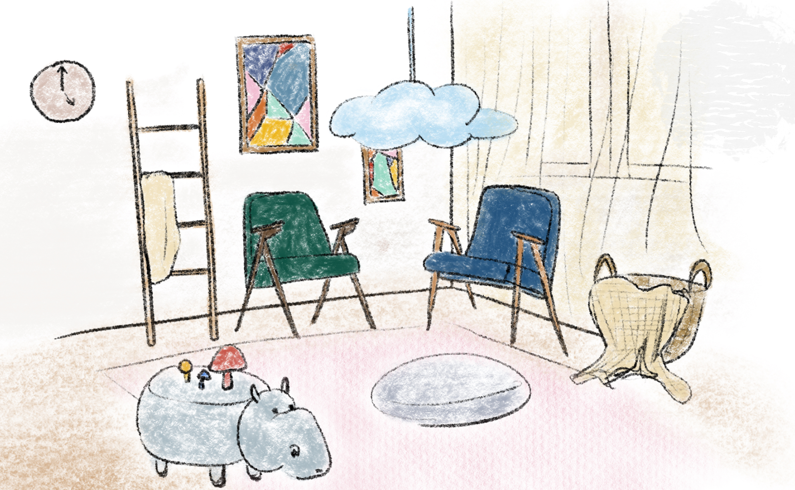

Genotype
My journey into interior design began in a dilapidated elementary classroom, where poor design stifled creativity. Experiencing a well-designed space after a school renovation sparked my passion for how interiors impact well-being. Studying architecture in college, I focused on interior design, fascinated by its emotional and functional intricacies. I believe interior spaces, like narratives, evoke profound experiences through texture, color, and light. Now at RISD for advanced studies, I aim to explore innovative, sustainable design practices. My goal is to create spaces that resonate deeply with their inhabitants, enhancing their emotional and functional experience.
═════════════════════ ✿ ═════════════════════
Classrooms
Rhode Island School of Design || Master of Design: Interior Architecture (Adaptive Reuse) Jun 2026
Yorkville University || Bachelor of Interior Design Jun 2024
University of Toronto || Honour Bachelor of Arts: Architecture Specialist Jun 2022
═════════════════════ ✿ ═════════════════════
Adventures
Art and Design Editor @ DSC Studio
At DSC Studio, I crafted and revised compelling articles on art events, design news, and exhibitions, deeply engaging with the contemporary art and design industry. Conducting thorough research from reliable sources, I ensured content accuracy and relevance. My technical proficiency in Rhino, AutoCAD, and Adobe Suite, paired with a creative approach, allowed me to explore diverse perspectives and interconnect various aspects of the art world.
2022 - 2023

Design Assistant Intern @ EXP
As a Design Assistant Intern at EXP, I collaborated with designers and engineers to streamline drawings and enhance project efficiency. I contributed to refining floor plans through detailed drawing and editing, improving design precision. Additionally, I led the creation of presentation materials, producing cohesive visuals that effectively communicated design concepts and plans, showcasing the team's vision and expertise.
2017